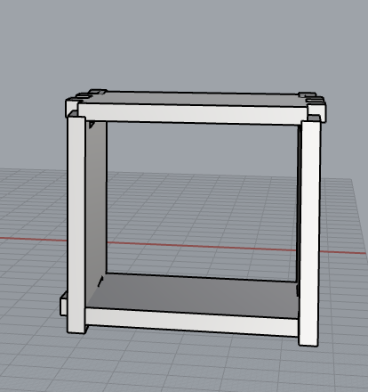
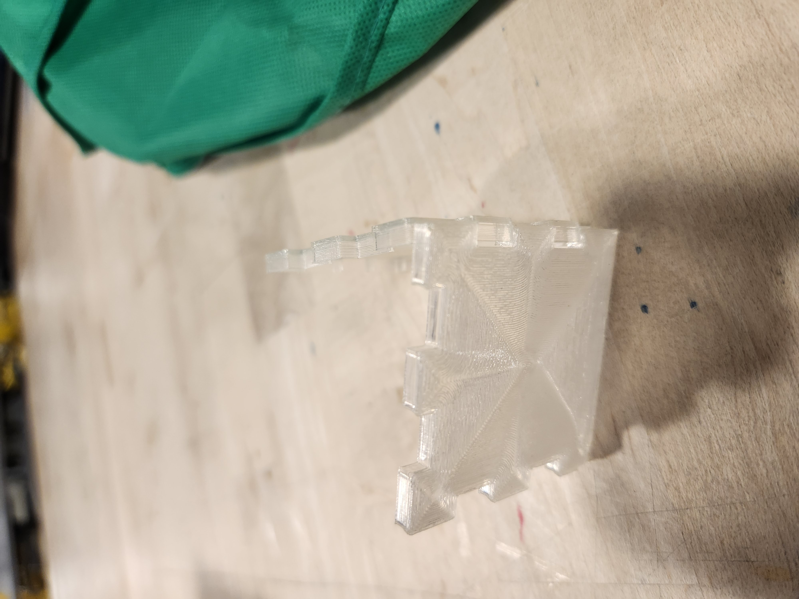
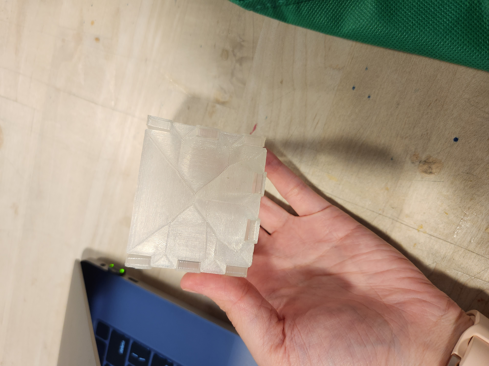

For this assignment, I decided to 3D print the panel pieces for the box. First, I built the puzzle pieces on Rhino. I made each edge to be 5cm, each tabs to be 10 mm to attach to the other pieces. After coming up with 2 pieces that fit together, I extruded and rendered to see if the pieces roughly fit together. I trimmed away the calculated gaps.
After checking the pieces fit together on Rhino, I needed to create a bottom piece. This one was a bit more complicated. I made each side 58mm to start with and trimmed away the 4 sides with the right measurements so that the box is a cube. When I was done trimming the 4 panels and bottom piece, I was ready to print.
I printed 5 pieces total and they each took around 30 minutes. I realized my cura setting was off and did not fill the inside, so when I went back to check what the estimation time was for filled, and it would take around 30 more minutes per panel. So I decided not to have it filled this time around.
Here are the pictures of all the printed pieces and the final product.
 As you can tell the pieces weren't fitting perfectly together at this point. There were still some gaps where they were supposed to fit. If I had more time, I would've have tried to reprint them, with inside filled properly so they can be fit together with more force and would hold.
Source files
Acknowledgement--thanks everyone!